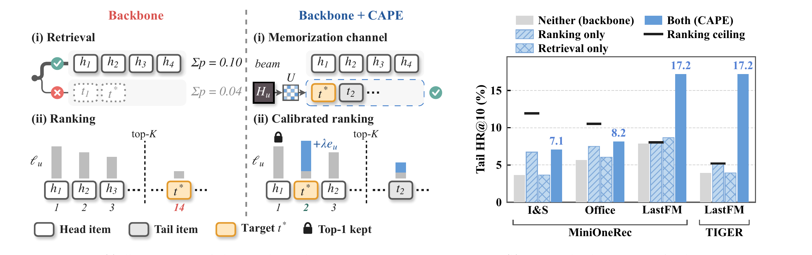
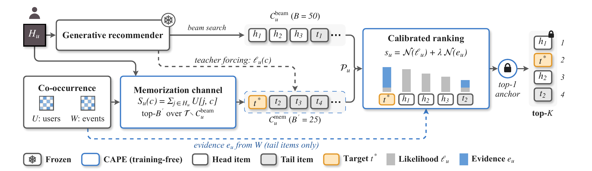

Generative Recommenders Forget the Long Tail: Restoring Memorization in Retrieval and Ranking
生成式推荐用 beam search 逐个生成物品 ID 的 token，冷门物品生成概率低，往往前一两步就被剪掉：Amazon 工业科学品类上，MiniOneRec 生成的 50 个候选只覆盖 11.94% 的冷门目标。CAPE 不重训模型，推理时从训练数据里统计哪些物品和用户历史被同一批用户交互过，按这个共现计数额外召回 25 个冷门候选，并把计数加进排序分。LastFM 上 TIGER 前 10 命中冷门目标的比例从 3.94% 升到 17.19%，每次请求耗时多 11–16%。
生成式推荐把每个物品编码成几个 token 组成的 ID，模型根据用户历史逐个生成这些 token，每一步只留概率最高的 50 条生成到一半的序列，最后再按同一个生成概率给候选排序。冷门物品概率低，往往前一两步就被丢掉：在 Amazon 工业科学品类上，用 MiniOneRec 生成 50 个候选，测试集里冷门目标只有 11.94% 在候选里；作者给每个用户额外塞 25 个冷门候选，因此多进来 135 个冷门目标，按生成概率排序后进前 10 的一个都没有。CAPE 不重训模型，推理时从训练数据里数出“哪些物品和用户历史被同一批用户交互过”，用它多召回 25 个冷门候选，并把这个计数加进排序分。LastFM 音乐数据上，TIGER 前 10 命中冷门目标的比例从 3.94% 涨到 17.19%；论文各组实验里，每次请求的耗时只多 11–16%。
1. 先把场景说清楚
生成式推荐这两年在工业界很热，代表是 TIGER 和 OneRec 一类模型。它的做法和双塔不一样，不建向量索引。每个物品先被编成一个短 ID，比如三个 token，这个 ID 叫语义 ID（SID），内容或表示相近的物品前几个 token 也相同。线上请求来了，模型读用户历史，先生成第一个 token，再接着生成第二个、第三个，拼出一个完整 ID 就是一个候选物品。
一个用户不可能只要一个候选，所以生成时用 beam search：每生成一步，只保留到目前为止概率最高的 B 条序列，其他的丢掉。这篇论文里 B 取 50，最后得到 50 个候选。然后排序也不另外训练模型，直接用生成这个物品 ID 的概率从高到低排，取前 10 展示。召回和排序用的是同一个分数。
论文关心的是冷门物品，定义是按训练集出现次数排在后 80% 的物品，下文都叫长尾。它们在测试集里占了一半以上的目标：Amazon 工业科学品类（下文 I&S）57.8%，Amazon 办公用品（下文 Office）51.1%，LastFM 64.2%。
2. 长尾为什么在召回时就被剪掉
beam search 每一步比较的是一个“生成到一半的前缀”的概率。论文用链式法则证明了一个很直观的事实：一个前缀的概率，等于以它开头的所有物品概率之和（命题 2.2）。
是 ID 的前 个 token， 是用户历史， 是物品， 是生成出不存在的 ID 的那点概率，只在合法 token 里归一化时为 0。
所以一个前缀能不能留下来，看的是它下面所有物品的概率加起来有多大，而不是下面最好的那个物品。模型用最大似然训练，冷门物品本身分到的概率就低，它所在的前缀加起来也不够大，第一步就可能被挤出前 50。
能不能单独给冷门物品的前缀加分？作者查了一下，I&S、Office、LastFM 上分别有 99.97%、96.21%、99.95% 的冷门物品，第一个 token 和至少一个热门物品相同。给这个前缀加分，加分会被同一前缀下的热门物品一起拿走。
排序这一步也救不回来。只要是从 50 个候选里挑前 10，冷门物品命中率最高也就是“冷门目标落在候选里的比例”。召回时丢掉的，后面任何重排都捞不回来（命题 2.1）。

3. 诊断：长尾到底丢在哪一步
这组实验要回答的是：冷门目标是在召回时没进候选，还是进了候选但被排序压下去了。
做法是固定住训练好的模型不动，对每个用户造三种候选集，都用生成概率排序，看测试目标是否落在候选里、是否进了前 10。三种候选集分别是：正常 beam 宽度 50；beam 宽度加到 75；宽度 50 再额外塞 25 个冷门物品，这 25 个是和用户历史共现次数最多、且不在原候选里的冷门物品。共现次数的具体算法在第 4 节。
模型用了两个：MiniOneRec（基于 Qwen2.5-1.5B 的生成式推荐）跑 I&S、Office、LastFM；TIGER（经典的生成式召回模型，编码器-解码器结构）跑 LastFM，取三个随机种子的均值。
| 数据 / 模型 | 冷门测试用户数 | 宽度 50：冷门目标在候选里的比例 / 进前 10 的个数 | 宽度 75：比例 / 进前 10 | 额外塞 25 个：新进候选的冷门目标 / 其中进前 10 |
|---|---|---|---|---|
| I&S / MiniOneRec | 2,622 | 11.94% / 96 | 14.45% / 95 | 135 / 0 |
| Office / MiniOneRec | 2,485 | 10.50% / 141 | 13.04% / 142 | 159 / 9 |
| LastFM / MiniOneRec | 634 | 8.04% / 50 | 9.31% / 55 | 98 / 6 |
| LastFM / TIGER | 634 | 5.21% / 25.0 | 5.63% / 25.0 | 107.3 / 0 |
先看召回。宽度 50 时，只有 5.21%–11.94% 的冷门目标进了候选，剩下的八九成后面怎么排都没用。宽度加大 50%，I&S 和 Office 分别多进来 66 和 63 个冷门目标，但前 10 命中只变了 −1 和 +1，LastFM 上最多只多进 8 个。多出来的 25 条 beam 给的还是概率次高的前缀，里面主要是热门物品。
再看排序。额外塞的 25 个冷门物品确实带进来不少目标，I&S 上 135 个，但按生成概率排完，进前 10 的是 0 个。生成概率本身就偏向热门物品，冷门目标就算进了候选，也排在热门物品后面。
最后一个数后面会用到：在宽度 50 没召回的冷门目标里，按和用户历史的共现次数排序，目标能排进该用户冷门物品前 50 的比例，I&S 8.2%、Office 9.6%，LastFM 两组是 24.0% 和 25.5%。也就是说共现计数在 LastFM 上能找回的东西明显更多。
作者把原因归到 Wide & Deep 里那对概念。推荐模型有两种本事：一种是直接记住“哪两个物品经常一起出现”，叫记忆；另一种是通过共享的表示推到没见过的组合，叫泛化。生成式模型是靠共享前缀做决策的，偏泛化，缺物品对级别的记忆；而 item-based 协同过滤做的就是这种记忆。
4. 方法：召回补一路，排序加一项
CAPE 的名字是 Co-occurrence-Aware Pool Expansion。它不改模型参数、不改 ID 编码、也不改 beam search，所有改动都在推理时加在模型外面。一次请求按三步走。

第一步，补一路冷门候选。 离线先从训练数据算一张表 $U[j,c]$：同时交互过物品 和物品 的用户有多少个。线上把用户历史里每个物品在这张表里对应的那一行加起来，得到每个物品的分数 ，然后在“冷门、且不在原来 50 个候选里”的物品中取分数最高的 25 个。这里按用户数而不是按交互次数来数，是为了防止几个重度用户的行为决定补什么。
补进来的 25 个物品也要有一个模型分，否则没法和原候选一起排。做法是把这 25 个物品的 ID 直接喂给原模型，算出生成每个 ID 的概率（论文叫 teacher forcing），一次批量前向就够，用户历史部分可以共享计算。这样 75 个候选都有生成概率，共现计数只决定谁进候选池，不替代模型分。
第二步，排序分里加共现。 再离线算第二张表 $W[j,c]$：物品 和 在同一条训练序列里一起出现了多少次，它比 多保留了一起出现的频繁程度。每个候选的共现分 是它和用户历史里每个物品的 值取平均，而且只给冷门物品算，热门物品这一项直接置 0。最终排序分：
是生成物品 的对数概率， 是在这 75 个候选内部做 min-max 归一化，把两个分数都拉到 0 到 1， 是唯一的超参，控制共现分的权重。要归一化，是因为对数概率和共现次数量纲完全不同，每个用户的分布也不一样，归一化之后同一个 才能对所有用户通用。
共现分只给冷门物品，原因是热门物品和谁都经常一起出现，共现次数天然偏热门。全部候选都加的话，加分主要落在本来就排在前面的热门物品上。
第三步，第一位不动。 排序结果的第一位始终是原模型排第一的那个物品，第 2 到第 10 位按新分数重排。这样每个用户看到的第一个推荐和原来完全一样，HR@1 不变，上线时风险容易说清楚。
在验证集上从 {0, 0.05, 0.1, 0.25, 0.5, 1, 2, 5} 里选，规则是先要求整体 HR@10（前 10 里命中测试目标的比例，所有用户都算）不低于原模型，在满足的取值里挑冷门 HR@10 最高的。后面所有对比方法用同一个选参规则。
成本主要有两块。两张表都是离线建好的稀疏矩阵，按 CSR 格式存，Amazon 每个品类 1.8 MB 和 2.4 MB，LastFM 有 4 万首歌，两张表是 454 MB 和 36 MB。线上的主要开销是给 25 个补充物品算生成概率这一次前向，MiniOneRec 每个请求本来要处理约 5,100 个输入 token，多出来大约 100 个。
5. 实验
设置。 数据是 I&S、Office（按 MiniOneRec 的预处理，每个用户只保留最近 10 个历史物品，按时间 8:1:1 切训练、验证、测试）和 LastFM-1K（987 个用户、40,429 首歌）。所有方法 beam 宽度都是 50，对比方法都在同样 75 个候选的预算内做文章，分两类：
- 改召回：beam 宽度直接开到 75；diverse beam search（DBS），把 75 条 beam 分 5 组，组间加差异惩罚。
- 改排序，在和 CAPE 完全相同的 75 个候选上重排：Frequency，从生成概率里减去一个按物品热度算的惩罚项；MMR，在相关性和与已选物品的相似度之间折中；P-xQuAD，按每个用户历史里冷门物品的占比来平衡冷热；NCP，给所有候选加 ，相当于 CAPE 去掉“只给冷门加分”和归一化。这四个也都锁定第一位。
主结果要说明两件事：冷门物品的命中率能不能涨，整体命中率会不会掉。下表摘自论文表 2，单位 %。
| 数据 / 模型 | 方法 | 整体 HR@10 | 冷门 HR@10 | 冷门 NDCG@10 |
|---|---|---|---|---|
| I&S / MiniOneRec | 原模型 | 12.57 | 3.66 | 1.62 |
| 宽度 75 | 12.57 | 3.62 | 1.61 | |
| 最强重排基线（P-xQuAD） | 12.88 | 4.58 | 2.12 | |
| CAPE | 12.46 | 7.06 | 3.42 | |
| Office / MiniOneRec | 原模型 | 14.45 | 5.67 | 3.77 |
| 宽度 75 | 14.51 | 5.71 | 3.77 | |
| 最强重排基线（NCP） | 15.06 | 6.56 | 4.01 | |
| CAPE | 15.27 | 8.17 | 5.12 | |
| LastFM / MiniOneRec | 原模型 | 7.50 | 7.89 | 4.62 |
| 宽度 75 | 8.11 | 8.68 | 4.89 | |
| 最强重排基线（NCP） | 9.73 | 11.20 | 5.50 | |
| CAPE | 12.06 | 17.19 | 8.18 | |
| LastFM / TIGER | 原模型 | 5.10 | 3.94 | 3.02 |
| 宽度 75 | 5.10 | 3.94 | 3.02 | |
| 最强重排基线（NCP） | 9.46 | 9.88 | 5.46 | |
| CAPE | 12.33 | 17.19 | 8.49 |
冷门 HR@10 比原模型高 3.39、2.49、9.31、13.25 个点，比同样候选下最好的重排方法高 2.48、1.61、5.99、7.31 个点。整体 HR@10 只有 I&S 低了 0.11，其他三组分别高 0.82、4.56、7.23。
几个对比方法为什么不行，论文给的解释我觉得都站得住。Frequency、MMR、P-xQuAD 在每组数据上离原模型的冷门 HR@10 都不到 1 个点，热度惩罚和多样性只能把冷门物品整体往前推，分不出用户要的是哪一个。NCP 也用了共现，但它给所有候选都加分，热门物品也被抬上去，比 CAPE 低 1.6–7.3 个点。DBS 分组后各组生成的 ID 大量重复，I&S 上 75 条 beam 平均只出 28 个不同物品。
LastFM 上有个现象值得单独说。两个模型原来的冷门 HR@10 差一倍，MiniOneRec 7.89，TIGER 3.94；加上 CAPE 之后两个都是 17.19，命中数分别是 109 和 108–110（TIGER 三个种子），而整体指标和 HR@1 依然不同。作者的读法是两个模型在冷门上差的都是同一种物品对记忆，补上同样的共现信息就补到同一个位置，和模型结构关系不大。
作者在方法和选参规则都定下来之后，又把 TIGER 拿到三个 Amazon 品类上跑了一遍，包括物品更多的 Beauty（12,101 个物品）。冷门 HR@10 分别从 3.55 到 5.78、3.43 到 5.75、1.34 到 2.12，相对提升 58–68%，整体 HR@10 都不低于原模型。
召回和排序各贡献多少。 做法是两个只修一处的对照：只补候选，75 个候选还是按生成概率排；只改排序，不补候选，在原来 50 个候选上用新分数排。结果在图 1 右侧。
只补候选，冷门 HR@10 的变化是 0.00、0.36、0.79、0.00，补进来的冷门目标被生成概率排了下去。只改排序，I&S 和 Office 上有 +3.05 和 +1.81，但在 LastFM 上正好停在 8.04 和 5.21，也就是冷门目标落在原候选里的比例，第 2 节说的那个上限。两个一起做，LastFM 上的提升远大于两个单项之和：MiniOneRec 是 9.31 对 0.95，TIGER 是 13.25 对 1.26。
哪一半更重要和数据有关。在 I&S 和 Office 上，原模型只把候选里 31% 和 54% 的冷门目标排进前 10，问题主要在排序；只改排序就能把这个比例提到 56% 和 71%。LastFM 上原模型已经把候选里 98%（MiniOneRec）和 76%（TIGER）的冷门目标排进了前 10，排序没什么可改的，只能靠多召回；补候选这一步在 LastFM 上比只改排序多涨 9.15 和 11.99 个点，在 Amazon 上只有 0.34 和 0.68。这和第 3 节最后那个比例对得上（Amazon 8–10%，LastFM 24–26%）。也就是说，上线前离线统计这两个比例，就能大致判断收益主要来自补召回还是改排序。
多出的 25 个候选怎么花更值。 这组实验比较两种花法：beam 宽度从 50 开到 75，以及 CAPE 的共现补充，两者后面用同样的新排序分。下表摘自论文表 4，延迟是单卡跑完整请求的墙钟时间，取每个模型前 128 个测试用户的均值，括号里是相对原模型的倍数。
| 数据 / 模型 | 补法 | 新进候选的冷门目标 | 冷门 HR@10 | 整体 HR@10 | 延迟（秒） | 每请求输入 token |
|---|---|---|---|---|---|---|
| I&S / MiniOneRec | 宽度 75 | 66 | 7.17 | 12.46 | 2.54（2.41×） | 12,473 |
| 共现补充 | 135 | 7.06 | 12.46 | 1.20（1.14×） | 5,146 | |
| Office / MiniOneRec | 宽度 75 | 63 | 7.85 | 14.88 | 2.60（2.42×） | 12,837 |
| 共现补充 | 159 | 8.17 | 15.27 | 1.22（1.14×） | 5,294 | |
| LastFM / MiniOneRec | 宽度 75 | 8 | 8.99 | 8.31 | 3.37（2.41×） | 15,770 |
| 共现补充 | 98 | 17.19 | 12.06 | 1.55（1.11×） | 6,479 | |
| LastFM / TIGER | 宽度 75 | 2.7 | 5.47 | 5.98 | 0.35（2.09×） | 545 |
| 共现补充 | 107.3 | 17.19 | 12.33 | 0.19（1.16×） | 291 |
Amazon 上两种补法的效果差不多，LastFM 上共现补充高出 8 个点以上。成本差很多：beam 开宽要把多出来的 25 条序列每一步都生成一遍，输入 token 翻了一倍多，请求时间多 109–143%；共现补充只需对 25 个已知 ID 算一次概率，多 11–16%。
作者还试了把共现补充换成一个训练好的 LightGCN 召回，同样取原候选之外的 25 个物品，排序不变。LightGCN 带进来的新冷门目标只有 14、35、24 个，共现补充是 135、159、98 个；在七组模型和数据的组合里，冷门 HR@10 都是 CAPE 更高，最多高 9.3 个点。作者的解释是图卷积会把冷门物品的信号往它的热门邻居上平滑，原始共现计数保留了具体是哪两个物品一起出现。
消融里最关键的两组。 第一组检验补充候选有用，是因为挑中的是共现物品，还是只因为给冷门物品留了 25 个位置。做法是把这 25 个位置换成最热门的 25 个冷门物品，或者随机 25 个冷门物品。结果新进的冷门目标 I&S 只有 9 和 26 个，Office 33 和 21 个，LastFM 0 个。
第二组检验排序分里的共现项有用，是因为它记的是具体物品对，还是只是给冷门物品统一加分。做法是把 表的物品编号随机打乱（取 5 次均值），候选和“只给冷门加分”的规则都不变。冷门 HR@10 掉到 3.67、6.04、8.86、5.68，和只按生成概率排几乎一样。两组一起说明，收益来自“哪些物品真和这个用户的历史一起出现过”。
另外两组。共现分不限于冷门、给所有候选都加时，整体 HR@10 涨得更多（13.48、15.82、12.36、13.41），冷门 HR@10 比 CAPE 低 0.24–2.71 个点，而且四组数据上整体 HR@10 都高于原模型。也就是说，生成式模型整体都缺物品对记忆，冷门物品上缺得最多；更看重整体指标的业务可以去掉这个限制。不锁第一位时，Amazon 两个品类的 HR@1 从 5.58 降到 5.47、8.36 降到 8.08，锁定的代价不大。
6. 局限
共现表只能覆盖训练数据里出现过的物品对，新上架、没有任何共现记录的物品，这条补充路径够不到，冷启动不在这篇的范围内。实验规模也偏小：Amazon 每个用户只保留 10 个历史物品，LastFM 只有 987 个用户，模型最大 1.5B。更大的生成模型、别的 ID 编码方式下，这两处问题会怎样变化，作者自己也说还没测。
还有一点论文没覆盖。LastFM 4 万首歌的用户级共现表就有 454 MB，工业物品库到千万甚至上亿时，完整的物品对共现表肯定存不下，需要截断成每个物品只留 top-N 共现邻居，这部分的成本和效果损失要自己评估。
7. 对做生成式召回的团队有什么用
我觉得这篇最值得先拿去用的是诊断方法。把测试目标按训练集出现次数切成热门和冷门，统计两个数：冷门目标有多少落在 beam 候选里，候选里的冷门目标又有多少最终进了前 10。后一个比例低，先改排序分；后一个已经很高、前一个很低，就得在 beam 之外补候选。
方法本身也好落地。它本质上是把老的 item-CF 共现召回接回生成式链路：beam 外补一路共现候选，用生成模型给它们算一次概率，排序时再加一项只给冷门物品的共现分。不少团队本来就把生成式召回和传统多路召回并行跑，这篇多给了一条结论：只补候选不够，补进来的冷门物品会被生成概率重新压到后面，排序分里也得带上共现。第一位锁定这个设计我也很喜欢，评审上线时一句话就能讲清楚影响范围。